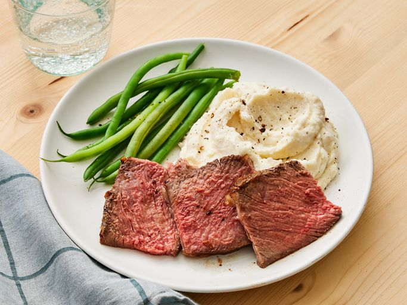

Easy Rib Eye Roast

Description
Another recipe considered a staple classic dish is the Rib Eye Roast. Many have relied on this dish to feed a large gathering.
The roast is a versatile main dish that pairs well with generally any kind of side dish you may like. It is often cooked with root vegetables, onions and garlic to add more flavor and depth.
While it can be an easy, simple dish it is also well known to be used as a more refined dish for certain occasions.
Ingredients
- 1 cup softened butter
- 6 cloves garlic, minced
- 1 (4 pound) bone-in rib-eye roast
- sea salt and cracked black pepper to taste
Steps
- Gather all ingredients and preheat the oven to 500 degrees F (260 degrees C).
- Beat butter and garlic together in a bowl.
- Poke several holes in rib eye with a sharp knife. Rub butter mixture all over meat and season with salt and pepper. Place rib eye fat-side up in a roasting pan.
- Roast in the preheated oven for 20 minutes.
- Reduce heat to 325 degrees F (165 degrees C) and continue cooking until rib eye is reddish-pink and juicy in the center, 1 1/2 to 2 hours. An instant-read thermometer inserted into the center will read 145 degrees F (63 degrees C) for medium.
- Serve and enjoy!